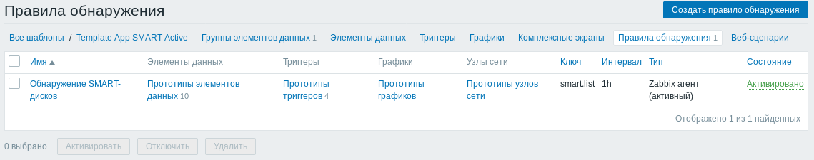
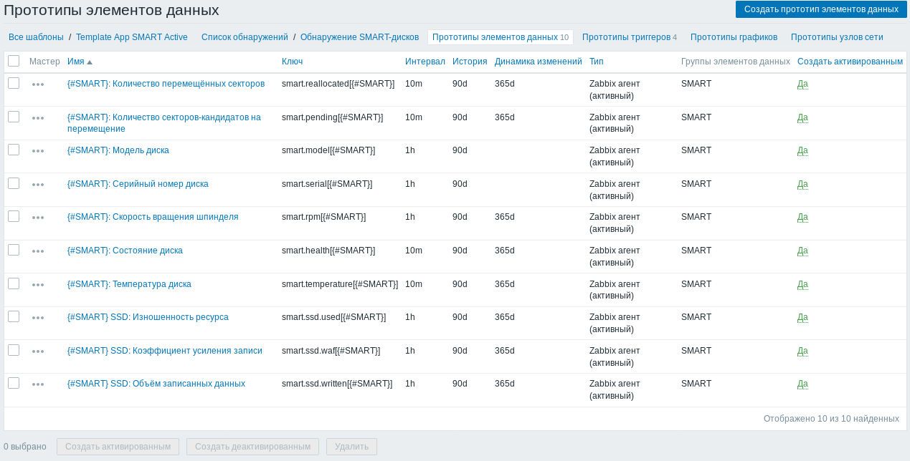
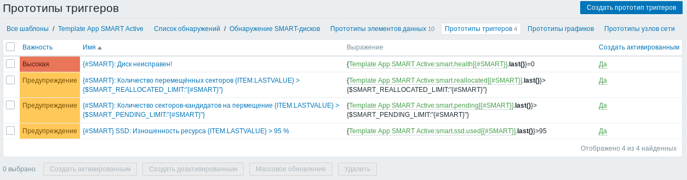
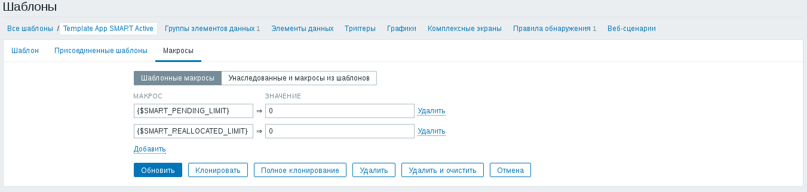
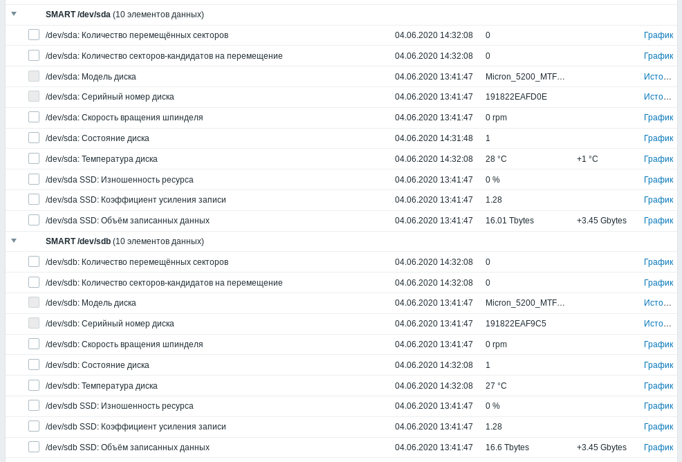

В этой статье описывается доработка шаблона Zabbix из статьи Контроль параметров S.M.A.R.T. жёстких дисков через Zabbix. Имеющийся шаблон пригоден только для контроля жётских дисков, а в этой статье я опишу доработки, которые позволят контролировать как состояние жёстких дисков, так и накопителей SSD Micron 5200 MAX. Этот шаблон может подойти и для других моделей накопителей, если они поддерживают необходимые атрибуты S.M.A.R.T., но на других накопителях не тестировался.
Попутно в шаблон были внесены доработки, аналогичные описанным в статье Контроль в Zabbix параметров SMART дисков, подключенных к аппаратному RAID-массиву. Вместо общего порога для всех дисков по количесвту перемещённых секторов и секторов, ожидающих перемещения, на этот раз в шаблоне предусмотрена индивидуальная настройка порогов для каждого из дисков.
Документация на атрибуты S.M.A.R.T. доступна по ссылке TN-FD-22: Client SATA SSD SMART Attribute Reference
С точки зрения контроля состояния накопителей SSD наиболее интересны следующие атрибуты:
| Идентификатор атрибута | Название атрибута | Пояснение |
|---|---|---|
| 202 | Percent_Lifetime_Used | Процент использования ресурса диска (100% - полностью изношен) |
| 246 | Total_Host_Sector_Write | Количество записанных секторов |
| 247 | Host_Program_Page_Count | Количество записанных страниц |
| 248 | Bckgnd_Program_Page_Cnt | Количество страниц, записанных контроллером |
На твердотельных накопителях единицей чтения и записи является страница, размер которой обычно больше логического размера сектора диска. По мере повторных перезаписей страница изнашивается и запись на неё становится всё менее надёжной. Количество гарантированных производителем успешных перезаписей страницы называется ресурсом. Чтобы снизить вероятность потери информации, контроллер накопителя ведёт учёт количества операций перезаписи каждой страницы. При любом изменении информации в логическом секторе диска контроллер выбирает из всех имеющихся свободных страниц наименее изношенные и копирует данные на неё. Контроллер имеет возможность посчитать изношенность всего накопителя в целом и отражает это значение в атрибуте Percent_Lifetime_Used.
Также производитель регламентирует в технических характеристиках накопителя гарантированный объём записанных на диск данных - TBW, Total Bytes Written. Например, исходя из технических характеристик накопителей, указанных на странице Micron 5200 series of SATA SSDs, на SSD Micron модели 5200 MAX 480Gb можно записать 4.38 петабайт данных. Контроллер накопителя ведёт учёт количества записанных 512-байтных секторов в атрибуте Total_Host_Sector_Write.
Страницы группируются в блоки. Для того, чтобы записать в страницу новое содержимое, необходимо выполнить операцию очистки всего блока. Из-за этого перезапись одного логического сектора может приводить к перезаписи в несколько раз большего объёма данных на SSD. Отношение реально записанного объёма данных к объёму, который просила записать операционная система, называется коэффициентом усиления записи (Write Amplification Factor). Посчитать его можно воспользовавшись значениями атрибутов S.M.A.R.T. Host_Program_Page_Count и Bckgnd_Program_Page_Cnt по следующей формуле:
WAF = (Host_Program_Page_Count + Bckgnd_Program_Page_Cnt) / Host_Program_Page_Count
Во-первых, нам полезно определять тип накопителя: жёсткий диск или твердотельный накопитель.
Для этого я воспользовался полем Rotation Rate, в котором содержится частота вращения диска в оборотах в минуту. Если это поле не содержит числа, то будем считать накопитель твердотельным. В таком случае частота вращения диска равняется нулю. Добавим в файл конфигурации Zabbix-агента /etc/zabbix/zabbix_agentd.conf «пользовательский параметр» для определения частоты вращения диска:
UserParameter=smart.rpm[*],/usr/bin/sudo /usr/sbin/smartctl -i $1 2>&1 | /usr/bin/awk -F: '$$1 ~ /^Rotation Rate$/ { match($$2, /[0-9]+/); if (RSTART > 0) { print substr($$2, RSTART, RLENGTH); } else { print 0 } }'
Для контроля процента использованного ресурса, объёма записанных данных и коэффициента усиления записи добавим в конфигурацию Zabbix-агента /etc/zabbix/zabbix_agentd.conf ещё три «пользовательских параметра»:
UserParameter=smart.ssd.used[*],/usr/bin/sudo /usr/sbin/smartctl -A $1 2>&1 | /usr/bin/awk 'BEGIN { p = 0; } /^202 / { p = $$10; } END { print p; }'
UserParameter=smart.ssd.written[*],/usr/bin/sudo /usr/sbin/smartctl -A $1 2>&1 | /usr/bin/awk 'BEGIN { w = 0; } /^246 / { w = $$10 * 512; } END { printf "%.0f", w; }'
UserParameter=smart.ssd.waf[*],/usr/bin/sudo /usr/sbin/smartctl -A $1 2>&1 | /usr/bin/awk 'BEGIN { hw = 1; cw = 0; } /^247 / { hw = $$10; } /^248 / { cw = $$10; } END { print (hw + cw) / hw; }'
После внесения изменений в конфигурацию Zabbix-агента, не забудьте его перезапустить:
# systemctl restart zabbix-agent
Я обновил два шаблона, описанных ранее, для контроля параметров S.M.A.R.T. твердотельных накопителей. Взять их можно по прежним ссылкам:
В обоих шаблонах имеется элемент данных для низкоуровневого обнаружения, который находит все имеющиеся в системе диски, поддерживающие S.M.A.R.T.:
Есть прототипы элементов данных, с помощью которых контролируется: статус здоровья диска, количество перемещённых секторов, секторов, ожидающих перемещения, температура жёсткого диска. Значения этих данных для каждого из жёстких дисков снимаются раз в 10 минут. Раз в час для каждого жёсткого диска запрашивается модель и серийный номер - они могут пригодиться, когда понадобится заменить один из жёстких дисков:
Имеется три прототипа триггеров, который будут созданы для каждого обнаруженного жёсткого диска. Самый главный триггер срабатывает в том случае, когда S.M.A.R.T. явным образом сообщает о неисправности диска. Два других триггера срабатывают при превышении лимита неисправных секторов или секторов, ожидающих перемещения:
Лимиты для двух последних триггеров можно задать через соответствующие макросы - {$SMART_REALLOCATED_LIMIT} и {$SMART_PENDING_LIMIT}:
На картинке заданы нулевые лимиты, поэтому триггеры будут срабатывать при появлении хотя бы одного подозрительного сектора на диске. Если вы посчитали, что проблемных секторов не так уж и много, то можно задать новые значения макросов индивидуально в самом наблюдаемом узле Zabbix.
Как можно заметить, в выражениях триггеров эти макросы используются в виде {$SMART_REALLOCATED_LIMIT:"{#SMART}"}. Макросы такого вида описаны в Руководстве по Zabbix, 7 Настройка, 10 Макросы, 2 Пользовательские макросы, Контекст пользовательских макросов.
При срабатывании триггера вида «/dev/sda: Количество перемещённых секторов 13 > 0» можно переопределить значение макроса для конкретного диска. Чтобы погасить этот триггер, на уровне узла можно определить макрос {$SMART_REALLOCATED_LIMIT:"/dev/sda"} со значением 13. Порог срабатывания триггеров на других жёстких дисках останется прежним - будет использоваться значение по умолчанию, взятое из шаблона.
Наконец, снимаемые данные в случае упомянутых твердотельных накопителей Micron SSD 5200 MAX выглядят следующим образом:
